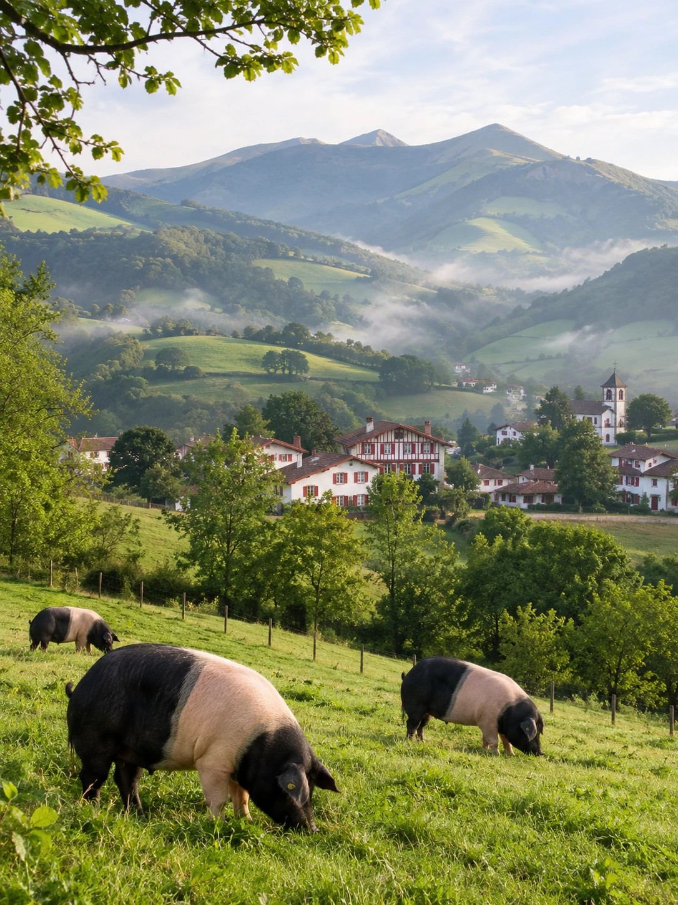
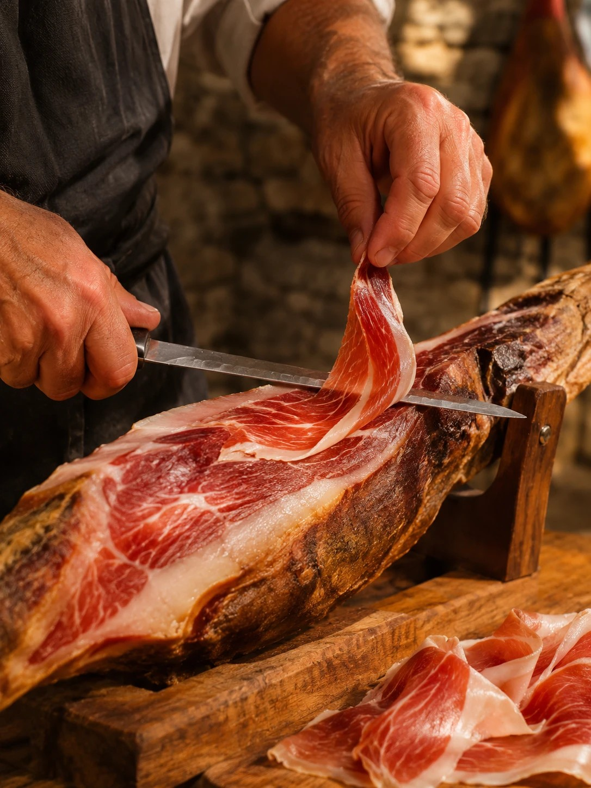
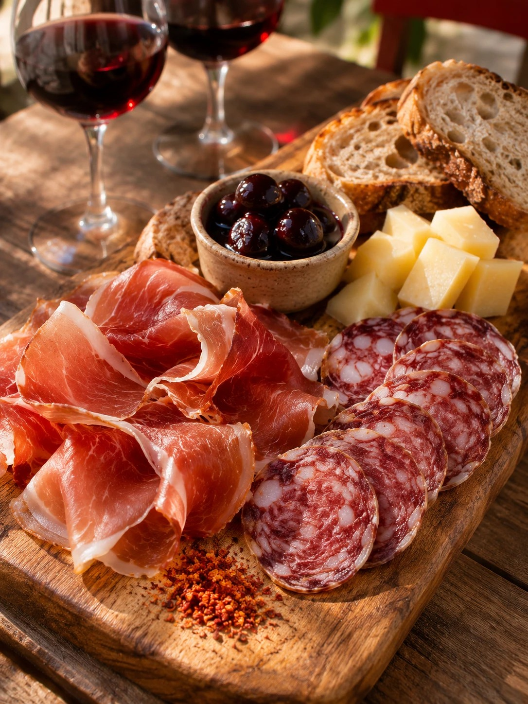

Maison Pierre Oteiza · Les Aldudes
Votre escapade idéale aux Aldudes ?

1
La balade
Le sentier du porc basque, au cœur de la vallée

2
La rencontre
Les gestes et l’histoire de nos producteurs

3
La dégustation
Le Kintoa AOP et nos spécialités, sur place
Répondez 1, 2 ou 3 en commentaire